Changi Chalet, Singapore
Fooyo's first outing. We had a good rest in the Changi Chalet near the beach. Life is intensive for startups, but everyone needs to spend some time .
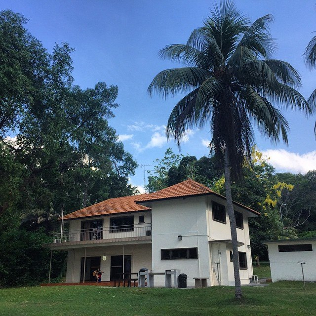
April 12-13th, 2015, SingaporeSafari
Safari at Maasai Mara National Park and Lake Nakuru
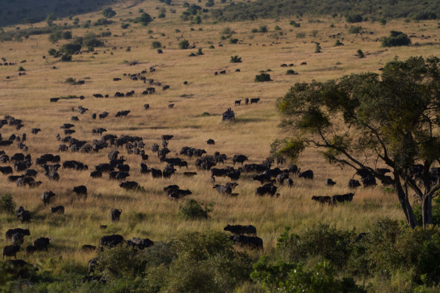
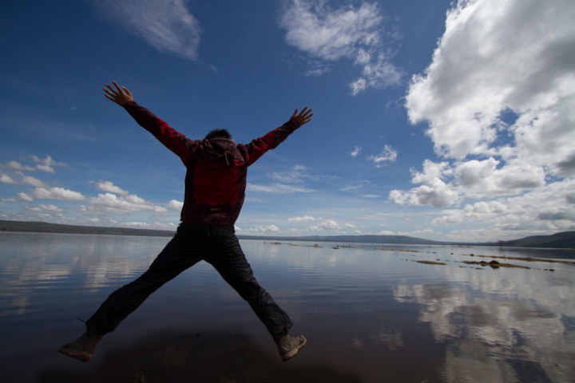
May 17th 2014, KenyaKilimanjaro Uhuru Peak
Highest peak so far, 5895m
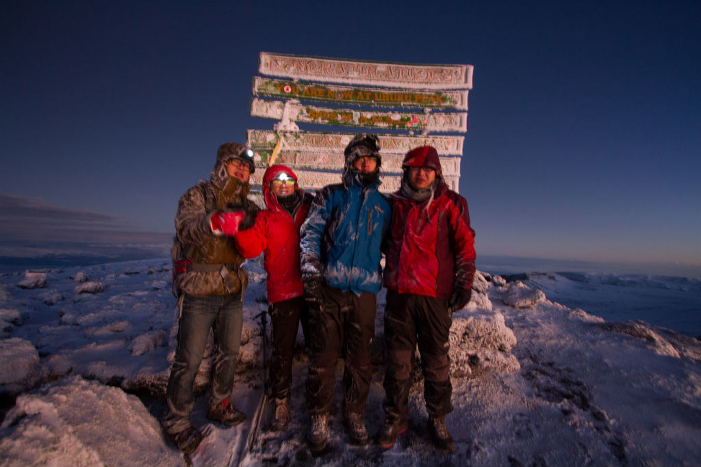
May 9th 2014, TanzaniaDubai
It was only one day's temporary visit to the rich state, I was amazed that the economy is really diversed and oil only counts for < = 2% of the GDP.
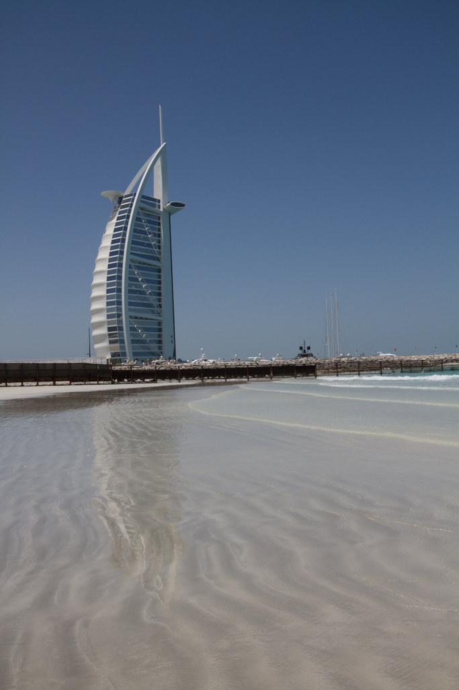
May 5th 2014, UAEAutumn at Peking
I was in Beijing taking some entrepeneur activities. This picture was taken in Peking University where the leaves turned yellow and looked so beautiful.
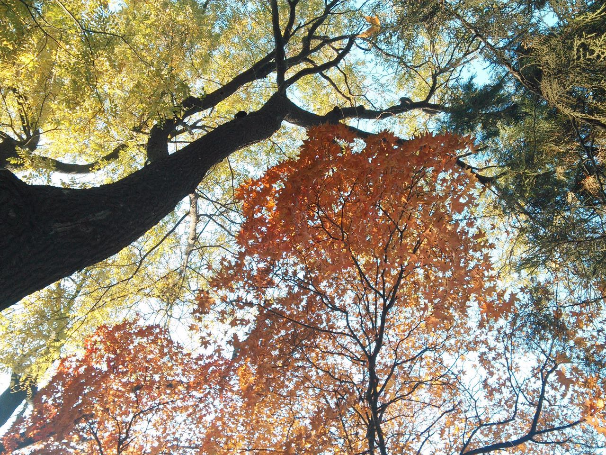
November 11th 2013, Beijing, ChinaKönigssee
The scenery is breathtaking
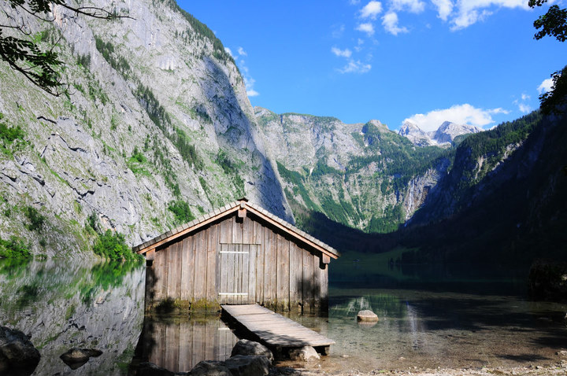
June 18th 2012,Königssee,Bavaria,GermanyGesellschaft der Musikfreunde in Wien
It was a childhood dream to attend the concert in the golden hall in Vienna. Though I bought the cheapest standing ticket, it's like a dream come true.
June 8th 2012, ViennaTallinn
A middle ages restaurant serving beers in pottery and various kinds of meat looks really historical.
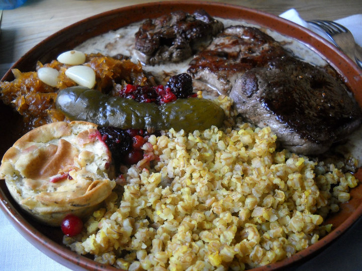
May 24th, 2012, EstoniaWindmill and Tulips
April is the best season to visit Holland.
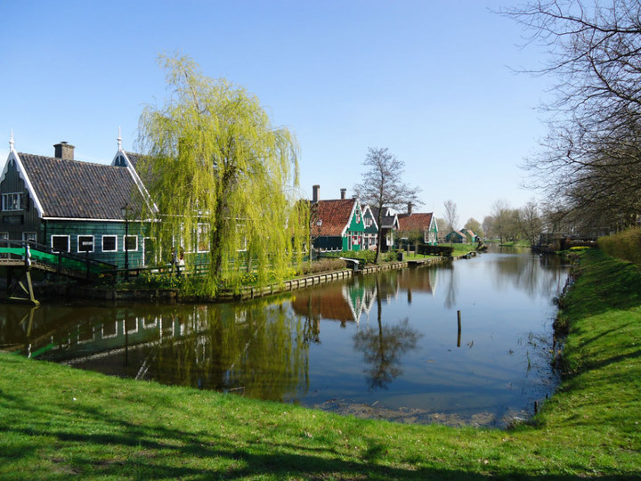
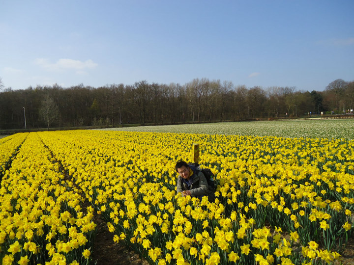
April 15th 2012, NetherlandsWhen I was still quite slim
Visited a school mate in Leuven. At that time, I was not fat...
April 2nd, Leuven, BelgiumParis alone
I was backpacking in Paris for a week. In such an artistic city, I find myself an artist.
March 13th 2012, ParisSunset in Baltic Sea
I was exchanging in Sweden when it was convenient to travel on Viking lines at the Baltic sea on weekends.
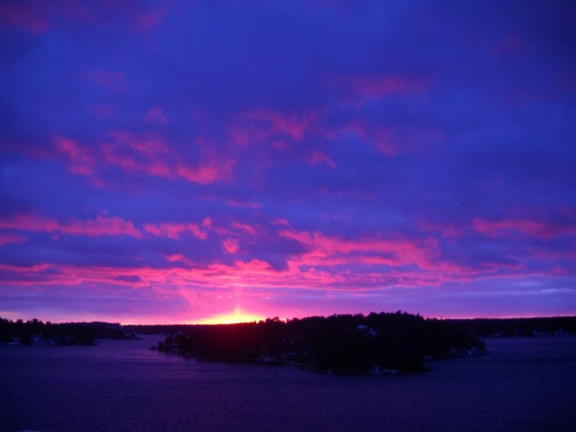
Feburary 24th, 2012, SwedenChasing the northern light
It was a lifelong experience to view the northern light at the Abisko Aurora Sky Station. Unfortunately, my camera wasn't good enough to capture the scenes. It would be cool to propose at such a lovely place. Dogsledding in the picture.
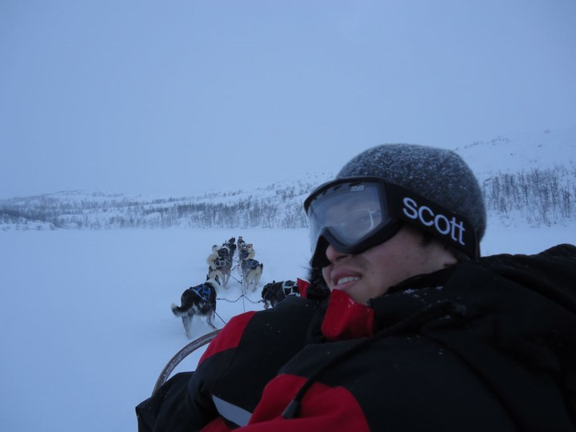
Feburary 16th, 2012, SwedenWest USA
San Fransisco
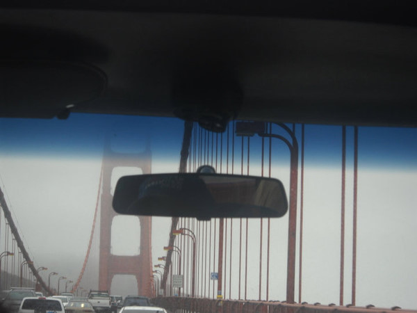
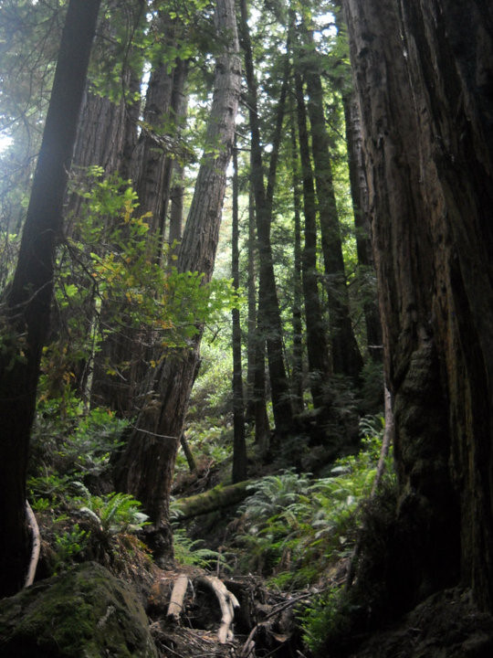
Los Angeles
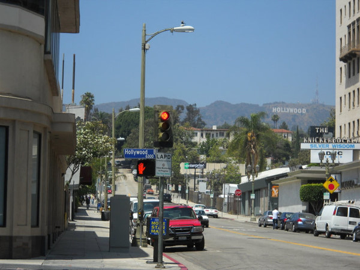
Grand Canyon
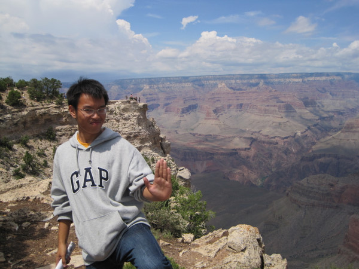
July 2010, USAEast USA
NYC
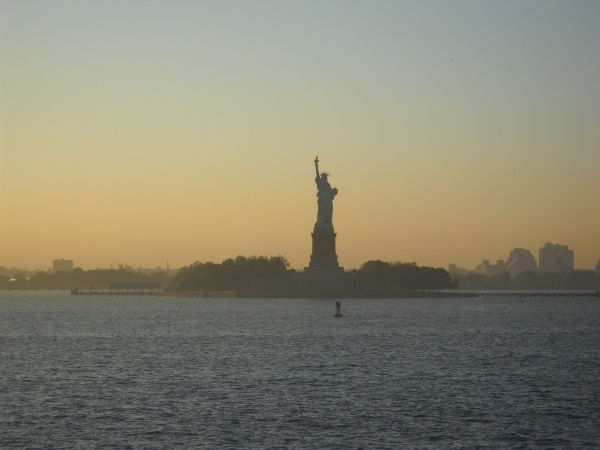

Boston - harvard&mit
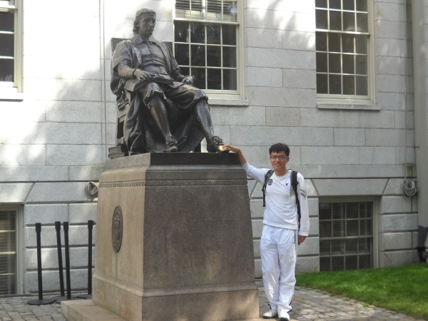
Princeton University

Boltanic Garden
Singapore's beautiful boltanic garden
Feburary 2010, Singapore